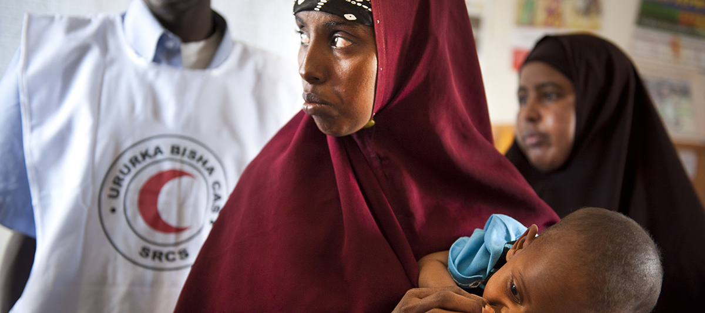
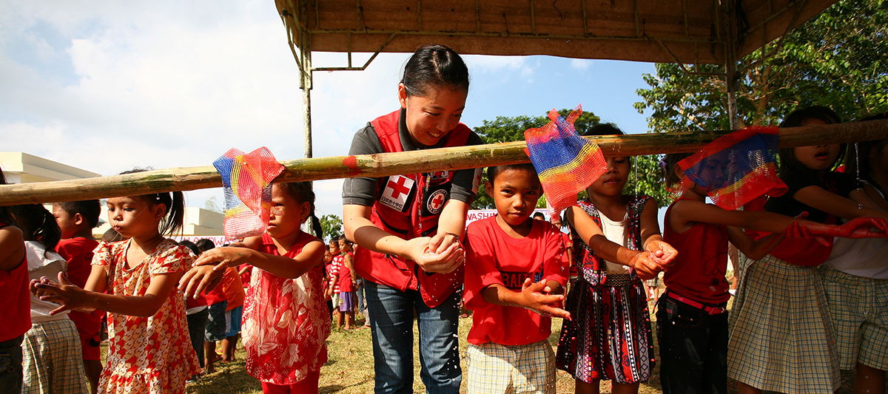

Lutte contre les épidémies à l’usage des volontaires
English
|
Français
|
Español

Comprendre les
Maladies

Activités
de Volontariat
Messages
Communautaires
Télécharger l'ensemble de la boîte à outils au format PDF dans un dossier zip
Lutte contre les épidémies à l’usage des volontaires Manuel de formation
Partager cette page sur